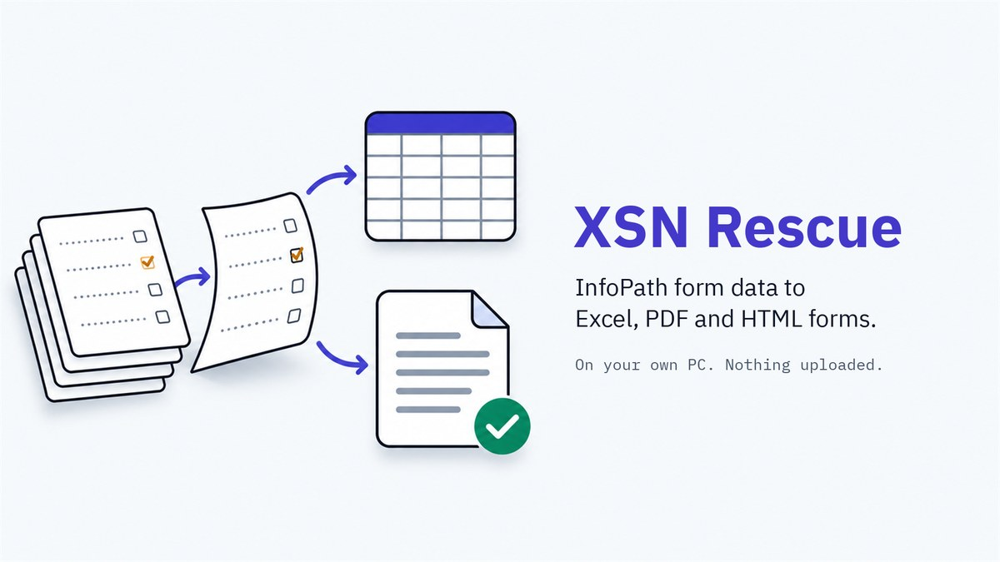
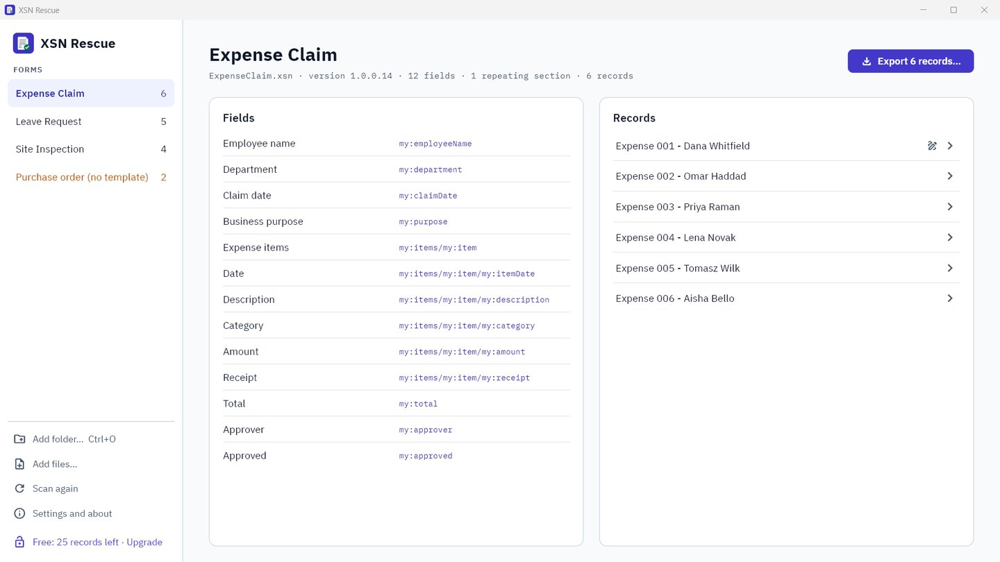
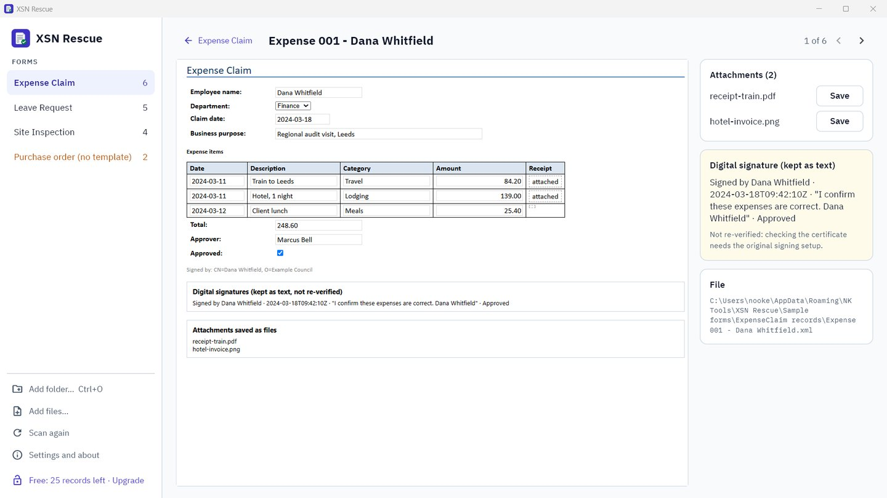
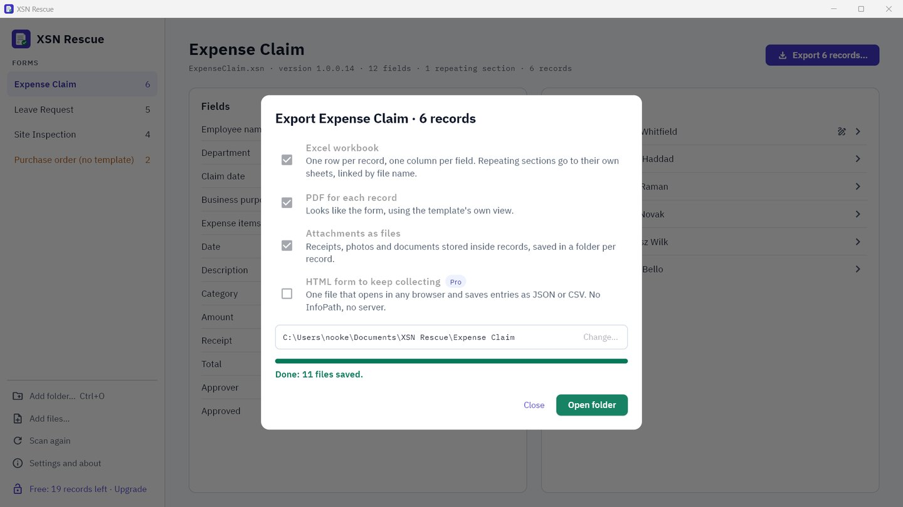
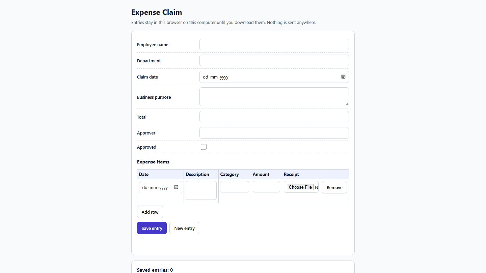

InfoPath support ended in July 2026
Export InfoPath forms to Excel and PDF, on your own PC
XSN Rescue reads InfoPath form templates (.xsn) and saved records (.xml) and turns them into an Excel workbook, a PDF per record that looks like the form, attachment files and a plain HTML form your office can keep using. No InfoPath, no SharePoint, nothing uploaded.

Why do it now
InfoPath 2013 and InfoPath Forms Services in SharePoint Online reached end of support in July 2026 (MC616550). On SharePoint Server, existing forms still load but receive no more fixes or security updates (Microsoft Q&A). Your records are safe in .xml files today; reading them gets harder with every update.
What you get
- Every record matched to its template, with the form's own field labels
- Excel: one row per record, repeating tables on their own sheet
- A PDF per record that looks like the form
- Attachments and pictures saved as files; signatures kept as text
- An HTML form to keep collecting the same data (Pro)
- Free to try on your own forms: preview everything, export 25 records




More: How to export InfoPath form data to Excel · Privacy policy · Support